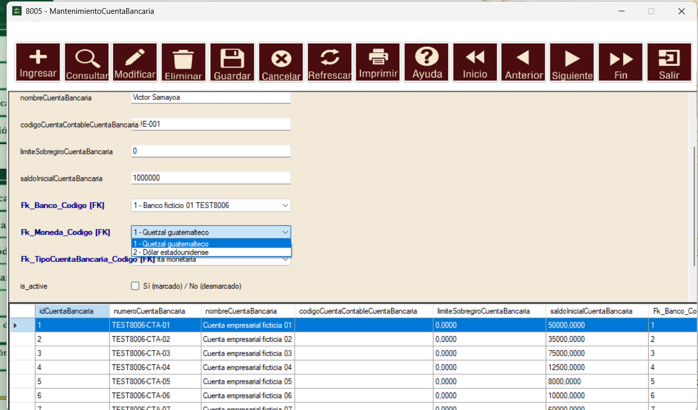
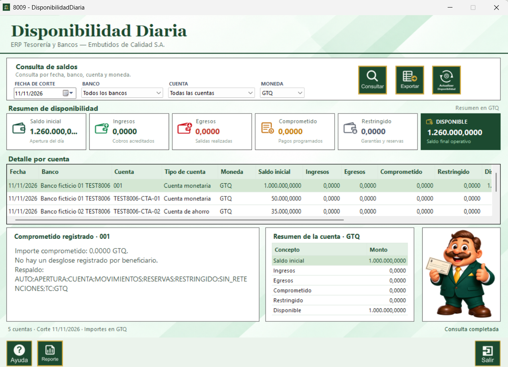
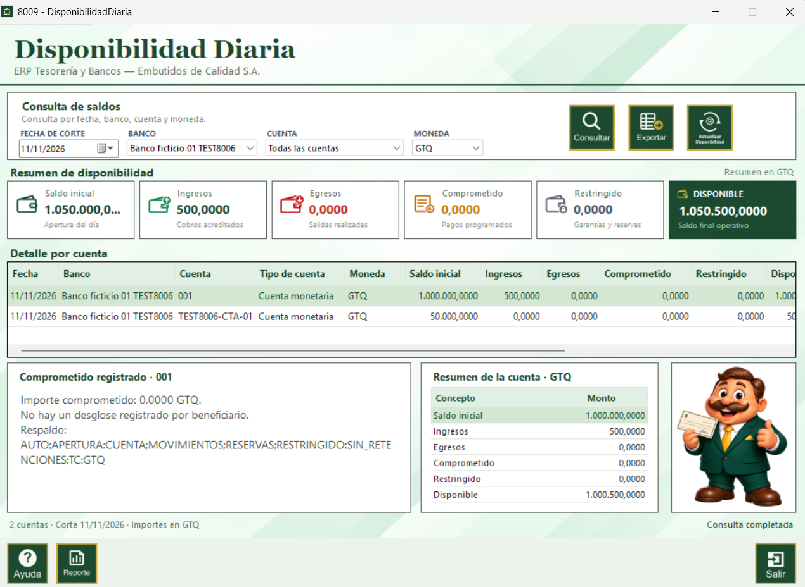
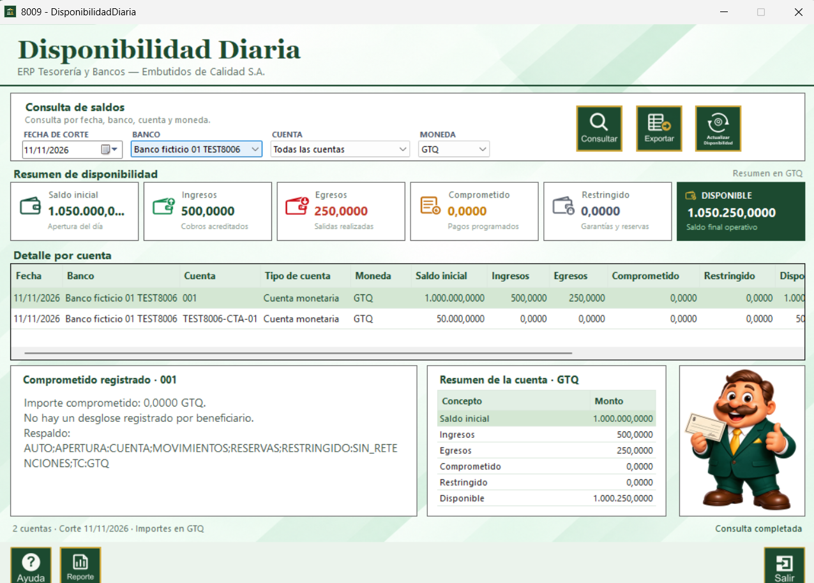
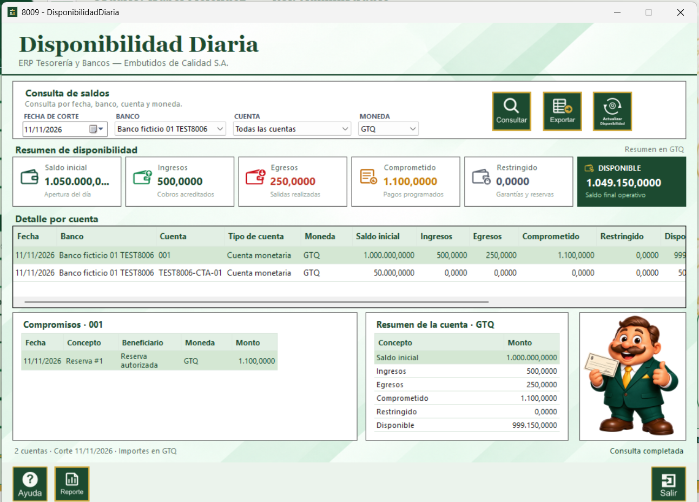

El proceso Disponibilidad Diaria corresponde al proceso 8009. Permite conocer cuánto dinero puede utilizarse en una fecha de corte por banco, cuenta y moneda.
La disponibilidad se presenta en el detalle de la moneda original y el resumen consolidado en GTQ.
Para llenar correctamente los indicadores, primero debe existir una cuenta bancaria activa con banco, moneda, tipo de cuenta y saldo inicial. El saldo inicial se registra en Mantenimiento de Cuenta Bancaria.

La tabla de cuentas muestra el saldo inicial de cada cuenta y su moneda. Una cuenta en moneda extranjera necesita una tasa válida para consolidarse en GTQ.

1. Seleccione la fecha de corte.
2. Seleccione un banco, una cuenta y una moneda, o deje “Todos” para consultar el consolidado.
3. Presione Consultar.
4. El sistema recalcula el día actual antes de mostrar el resultado. Los cortes anteriores se consultan como históricos.

Los seis KPI forman el resumen de disponibilidad. La fórmula general es:
Disponible = Saldo inicial + Ingresos − Egresos − Comprometido − Restringido
Se toma del campo saldoInicialCuentaBancaria de la cuenta bancaria. Representa la apertura del día antes de aplicar movimientos.
Para llenarlo: abra Cuenta Bancaria, seleccione la cuenta, indique un saldo inicial válido y guarde. El valor debe estar en la moneda de la cuenta.
Si existen cortes, conciliaciones o extractos anteriores, el sistema usa el último saldo operativo disponible según la fecha.
Se llena con los movimientos de entrada o cobros acreditados en la fecha de corte. El movimiento debe estar registrado para la cuenta, moneda y fecha consultadas, y su tipo de transacción debe tener efecto positivo.
En la pantalla se identifica con color verde y la descripción “Cobros acreditados”.

Se llena con los movimientos de salida realizados en la fecha de corte. El movimiento debe tener efecto negativo y estar asociado a la cuenta consultada.
En la pantalla se identifica con color rojo y la descripción “Salidas realizadas”.

Se llena con pagos programados, reservas u órdenes que todavía no se han ejecutado. El importe reduce la disponibilidad, aunque aún no aparezca como egreso.
Al seleccionar una cuenta, el panel inferior muestra el desglose de compromisos por fecha, concepto, beneficiario, moneda y monto.

Se llena con fondos bloqueados por garantías, reservas u otro proceso operativo que impida su uso. Mientras no exista un proceso que los suministre, el valor aparece en cero.
Este importe también se resta de la disponibilidad.
Es el saldo final operativo que puede utilizarse. Se calcula automáticamente con los cinco valores anteriores; no se escribe manualmente.
Si el resultado no coincide, revise primero la fecha de corte, la moneda, los movimientos, las reservas y el saldo inicial de la cuenta.
La tabla muestra fecha, banco, cuenta, tipo de cuenta, moneda, saldo inicial, ingresos, egresos, comprometido, restringido y disponible. Seleccione una fila para ver el resumen de la cuenta y los compromisos registrados.
El detalle mantiene la moneda original de la cuenta. El resumen general indica “Resumen en GTQ” cuando se consolidan varias monedas.
El botón Actualizar disponibilidad reconstruye el corte actual tomando la apertura, movimientos, conciliaciones, extractos, reservas y fondos restringidos disponibles. Úselo después de registrar cambios operativos.
Exportar guarda el detalle visible en CSV. Reporte abre el formulario de reporte del módulo con la fecha, filtros, tabla y vista previa de impresión.
El reporte se habilita cuando existen registros en el detalle.
Ayuda abre esta guía. Salir cierra la ventana de Disponibilidad Diaria.